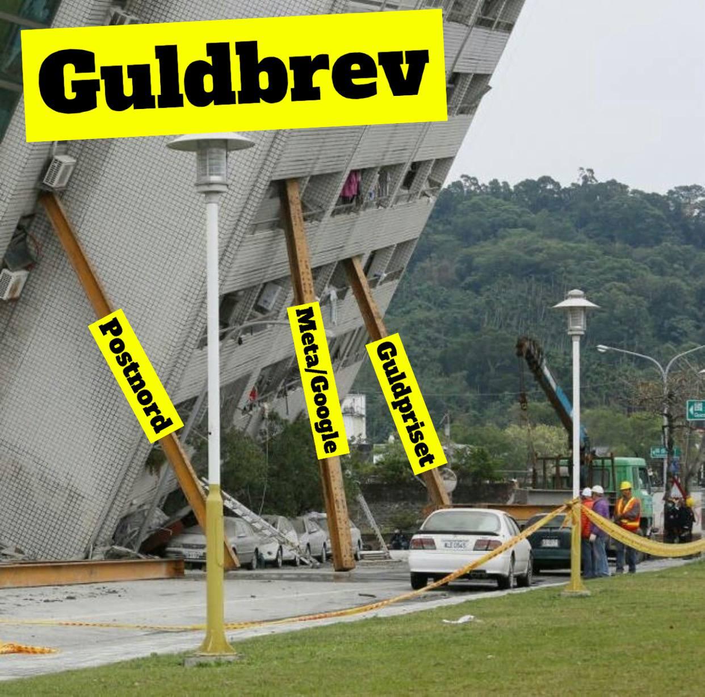
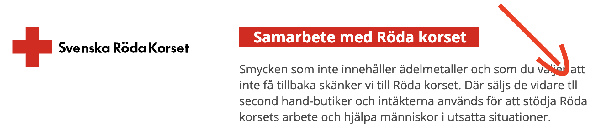
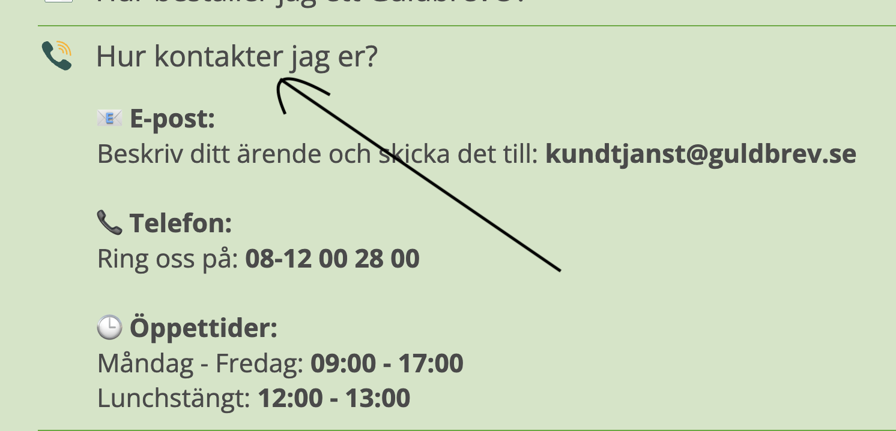

Guldbrev - Ser ut som en gyllene värdefälla
Tänk på att investeringar alltid innebär ett risktagande. Gör alltid din egen analys innan eventuell handel.
Jag äger inga aktier i Guldbrev och har ingen avsikt att förvärva aktier i närtid.
Guldbrev går till börsen, ska värderas till 416 miljoner i teckningen och gör runt 75 miljoner i EBIT på R12, EV/EBIT är alltså på skrikande låga 5,5x — KÖP?
“Guldbrevs affärsmodell är i dagsläget helt fokuserad på ett enda erbjudande – inköp av guld från privatpersoner via post. Under räkenskapsåret 2024 genererades nära 100 procent av Guldbrevs intäkter från denna tjänst.” – Guldbrevs prospekt
Guldbrev själva vill placera sig som ett stark varumärke som är inarbetat under lång tid. Privatpersonerna som skickar in sitt guld vill göra det med ett företag som är:
- Snabbt
- Tillförlitligt
- Smidigt
För att verksamheten ska blomstra behövs:
- Intensiv marknadsföring: Google/Meta
- Stigande guldpris
- Minskande värde på valuta (SEK & USD)
- Post med REK brev (Postnord)
Om guldpriset inte stiger kommer det vara svårare att motivera personer som är på gränsen att sälja sitt guld. Det blir då en uttömlig källa.

I dagsläget har Guldbrev otroliga marknadsförutsättningar, spikande guldpris och pressade konsumenter. Bolaget gör det visserligen bra och fångar denna efterfrågan med en omsättningstillväxt på ca 150 procent YoY.
Guld hos privatpersoner: Återvinning eller en uttömlig källa?
När Agata sålt sitt guld så kommer hon inte att sälja igen ett år senare efter som att det inte dyker upp nytt guld från ingenstans. Det är enligt den tesen en uttömlig källa.
Vd menar å andra sidan att det är en återvinningscykel, att guldet återvinns och sedan produceras nytt guld som guldbrev sedan köper tillbaka. I presentationsmaterialet visas en bild där återvinningen är stabil, men frågan är om det är precis så stabilt för privatpersoner som det är för andra guldanvändare? Det är rimligt att tro att industrin är bra på att återvinna guldet, men från privatpersoner är jag skeptisk till att det är en cykel, det lär vara en boom-bust cykel såfall.
Guldpriset vs omsättning
Guldbrev är bra på att fånga upp tillväxten!
Risker
Riskerna är väldigt många:
- Bristen av vallgrav, lätt att kopiera?
- Många aktiva fall hos konsumentombudsmannen, totalt 65 st sedan 2020 - Det är väldigt mycket sett till hur pass litet guldbrev är
- Guldbrev fick betala vite för att de använde en affe-sajt för att dra kunder till sajten, utan att säga att själva var bakom affe-sajten guldpriset.se – Dåligt
Slaviga… eller underbemannade?
Prospektet 
Ej korrläst text på 1a sidan

Ännu ett fel på 1a sidan


Reflektioner efter att ha läst prospektet
- Ingen recurring revenue, you only sell once
- Beroende av väldigt många andra aktörer: Big tech, Postnord, Guldpriset, Valuta, Konjunktur,
- Underbemannade, verkar rentav slarviga –> Marginalerna är boostade
- Affärsmodellen är extremt enkel, beroende av att ha bäst varumärke/förtroende från kunder
- Nästan lika många anställda som antalet länder bolaget är verksamt i
- Uppdressat som tusan för IPO – maximal omsättningstillväxt, max ebitda
- Utdelningspolicy på 60-80% av nettovinsten tyder på att de inte vet vad de ska allokera pengarna till —> svagt mgmt?
Frågor:
- Var kommer all goodwill som är på balansräkningen? Svar: Kommer från när huvudägaren förvärvade bolaget för x antal år sedan, skrivs ner löpande.
- Hur påverkas de om guldpriset går ner? Ökande andel returer? – Svar: Enligt vd, kommer det innebära press på hela marknaden i stort och Guldbrev är starkaste aktören i sin huvudmarknad så därför lär det vara ok
- Hur stor andel av alla som skickar in är det som inte accepterar och returnerar? Frågade inte
- Det verkar som att de betalar runt hälften av värdet som de själva kan sälja till, 180M intäkter mot 94M i råvaror. Är det inte värt att försöka ta marknadsandelar? Frågade inte
- Förvärv? Är det av intresse? Är tanken att det ska vara en utdelningscase på lång sikt? verkar så med deras utdelningspolicy? Svar nej verkar det som
- Går det att göra samma sak med andra ädelmetaller? Varför är just guld så bra? Silver är väl ok också? Silver har för lågt värde per gram och diamanter går bara ner i pris/kg
- Hur stor marknadsandel har de på respektive marknad? 1a i sverige, starka i norge och finland, nästan noll i tyskland och nederländerna
Snabb värdering:
- EV / EBIT = 405 MSEK/ 70 MSEK= 5,75x ev/ebit på R12
- 4,5x ev/ebit om man tror att de kan göra 90m ebit i 2025E
- 7,7x P/E
Även om de skulle tappa marginal, till hälften och tappa omsättningstillväxt med allt så skulle det inte vara så dyrt? Men det är säkert tillräckligt frisserat för att inte rättfärdiga en investering. Troligen många sömnlösa nätter om man är deep down i detta.
Aktiemingel inför IPO
Deltog på Aktiemingel för att få en känsla för bolaget mer än det som är skrivet ovan. Här är min tankar:
Genomsnittigt kund är en 50 årig kvinna som bor i en mindre ort. 70% av intäkterna kommer från personer som bor i mindre orter, alltså platser där det bor färre än 20k personer. Ändå spännande, låter som att det är ganska dyrt att bygga ett varumärke som kan nå till personer som i sin tur inte har så bra koll på priserna på guld.
Huvudsaklig konkurent i Sverige är Diamantbrev. I de andra marknaderna verkar det i stor utsträckning vara pantbanker eller andra liknande online aktörer. 97 procent av omsättningen kommer från Sverige och Norge.
Vad är största riskerna?
- Konkurrens enligt vd
- Han verkar inte jätteorolig över big tech eller att posten höjer priserna etc — Strider mot det som står i prospektet
- Lite kanske för guldpriset, att det kan svänga sentiment – han menar på att man har ett bra varumärke så att det kommer att leda till att konkurrenterna får det tuffare, medan Guldbrev fortsatt kommer kunna ta en bra cut.
Vad är en normaliserad omsättningstillväxt / Rörelsemarginal? Vd gör ingen form av prognos in i framtiden över vad han tror om bolaget. Är det rimligt att tro att marginalerna går högre, stannar eller minskar, finns inga tankar om. Vd bedömer att det bör tugga på, men ger ingen indikation varken upp eller ner.
Kapitalallokering: Det verkar inte som att det finns någon annan tanke än utdelning. Han tkr inte att de är underbemannade, inget som är tydligt med att han tycker iaf.
Varför just guld? Tankar om silver och diamanter utöver guld? Andra ädelmetaller är, iaf silver och diamanter som jag drog upp är inte av intresse just nu. Diamanter går ner i pris, inte som guld. Silver har mycket lägre pris per gram, blir inte samma hävstång.
Han menar på att man kan ta bättre betalt och bibehålla sina marginaler för att man har ett bättre varumärke än konkurrenterna. De som säljer vill ha något smidigt, snabbt och tillförlitligt — inte bästa pris. Är guldbrevs varumärke tillräckligt stark för att behålla sin premie? Vd verkar inte se några hinder.
Är det en källa som är outtömlig? Alltså att när tant Agata i Bromölla sålt sina guldsmycken så finns det inget mer att hämta ett år senaste? Vd menar på att det är en cirkel, en återvinningscykel som rullar, den tar inte slut utan snurrar vidare. Det är något som jag faktiskt håller med om, återvinningen av guld är ganska konstant.
Ett annat missförstånd som många verkar dra upp är att det är kriminella som använder sig av deras tjänster, tror faktiskt det är ganska liten risk, eftersom man behöver en målvakt för att få betalt för sitt guld man skickar in, då personnummer behöver anges. Enligt bolaget själva är det väldigt få fall som polisen är intresserade av. Jag tror inte det är en så stor risk.
Påpekade även de slarvfel som fanns på deras startsida, något som blev åtgärdat bara ett par timmar efter jag nämnde det till vd. Se screenshots högre upp.
Bull case: Varumärke, Varumärke och Varumärke
- Konsolidering i branschen, huvudsakliga konkurrenterna är pantbanker som i sin tur har mycket fixed costs och mycket lägre marginaler. De är inte lika snabba, smidiga och saknar det starka varumärke som Guldbrev sitter på.
- På lägre sikt, i samband med att man tar allt mer marknadsandelar så är det svårare för andra att ta den marknadsplatsen som guldbrev har. Det är marknadsföringsintensivt att vara top of mind för alla dessa 50 åringa kvinnor i små orter som kan tänka sig sälja sitt guld.
- Varumärket gör att Guldbrev kan motivera att sina marginal ska vara kvar, det är inte konstigt att de kan köpa guldet för hälften av market value.
- Värderingen är låg, om de kan behålla sin marginal och fortsätta växa tvåsiffrigt så är det extremt bra.
Ingen investering för mig
Tänker att det inte är något som lirar i min portfölj, trots att det är otroligt enkelt att förstå och i ett bullish case är det fantastiskt. På lång sikt är riskerna påtagliga, men det är också risker som påverkar många andra av aktörer i marknaden så det behöver inte vara så illa. Jag kommer avvakta med guldbrev.